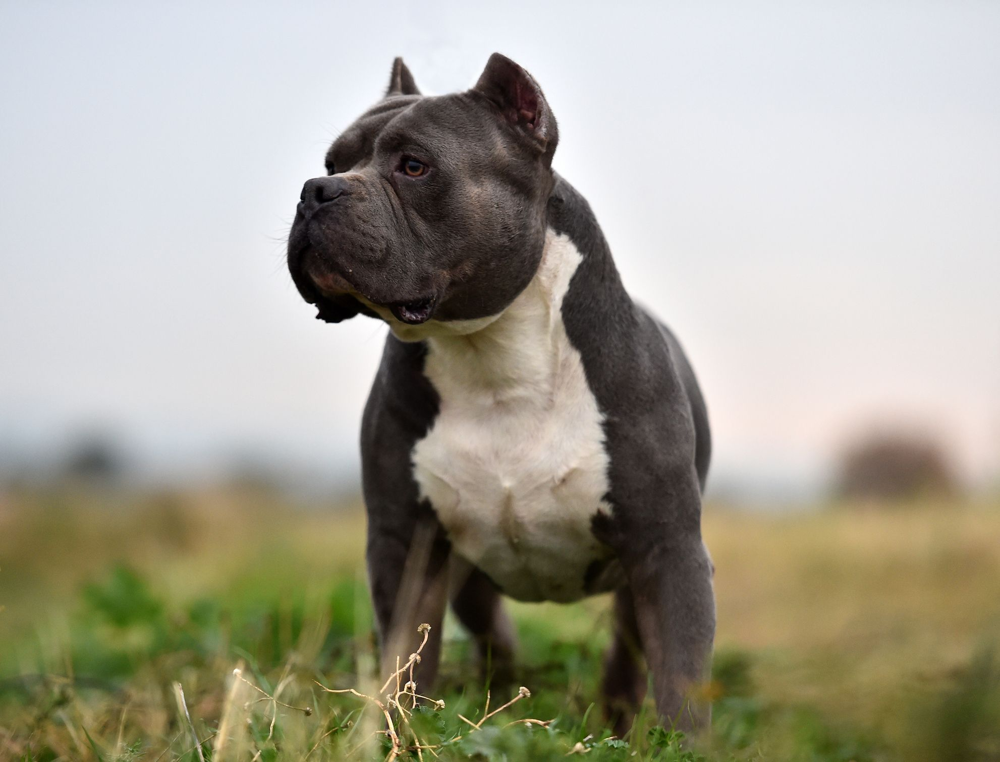

bulldogs

The Bulldog is a British breed of dog of mastiff type. It may also be known as the English Bulldog or British Bulldog. It is a medium sized, muscular dog of around 40–55 lb (18–25 kg). They have large heads with thick folds of skin around the face and shoulders, and a relatively flat face with a protruding lower jaw
golden retriever

The Golden Retriever is a Scottish breed of retriever dog of medium size. It is characterised by a gentle and affectionate nature and a striking golden coat. It is commonly kept as a pet and is among the most frequently registered breeds in several Western countries.It is a frequent competitor in dog shows and obedience trials; it is also used as a gundog, and may be trained for use as a guide dog.
pitbull

Pit bull, also called American Pit Bull Terrier or Pit Bull Terrier, fighting dog developed in 19th-century England, Scotland, and Ireland from bulldog and terrier ancestry for hunting, specifically capturing and restraining semi-feral livestock. The name has been applied historically to several breeds of dogs—including the bull terrier, American Staffordshire Terrier, and Staffordshire Bull Terrier—but it is not recognized as a distinct breed by the American Kennel Club.